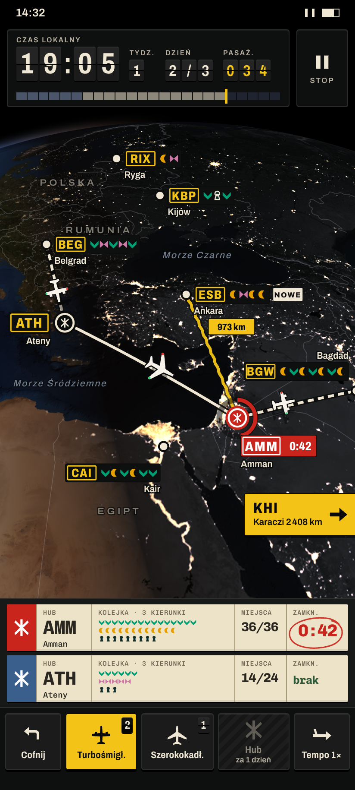
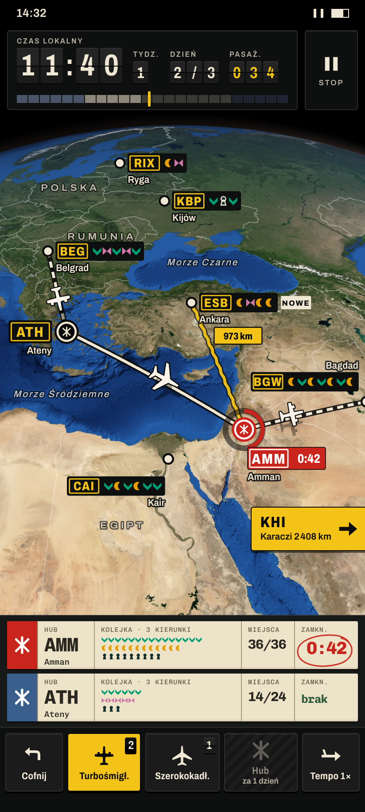
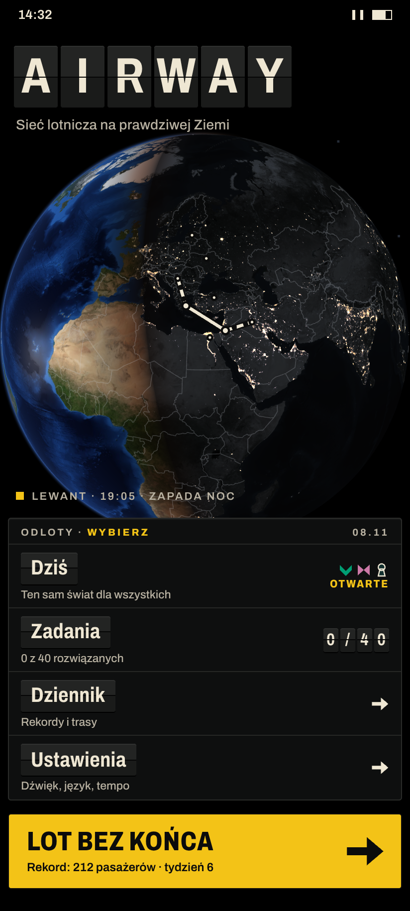
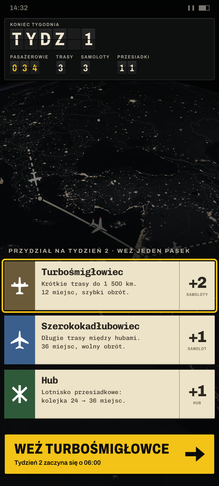
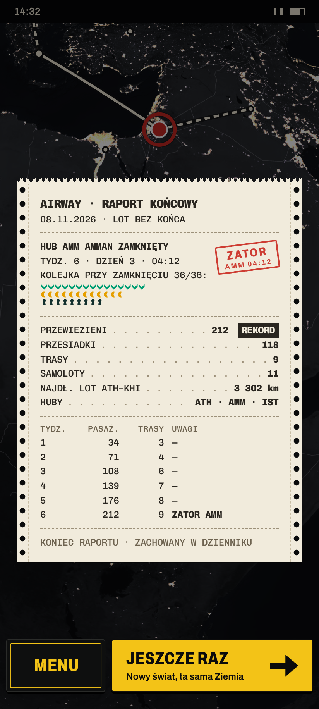

Globus z K2 (NASA Blue Marble / Black Marble, domena publiczna). Chrom ze słownictwa lotniska, nie aplikacji: tablica split-flap (zegar, tydzień, pasażerowie), znaki lotniskowe ICAO (żółte na czarnym = lotnisko, czarne na żółtym = kierunek i główna akcja, białe na czerwonym = zator), papierowe paski lotu kontrolera (huby i przydziały), wydruk dalekopisu (raport). Kroje: Archivo (tablica, znaki) i Chivo Mono (paski, wydruk), SIL OFL. Kadry 412×915 pt, PNG 824×1830.




